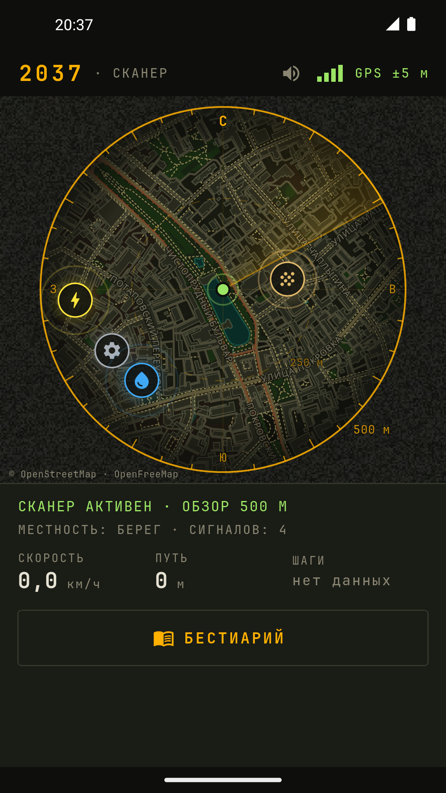
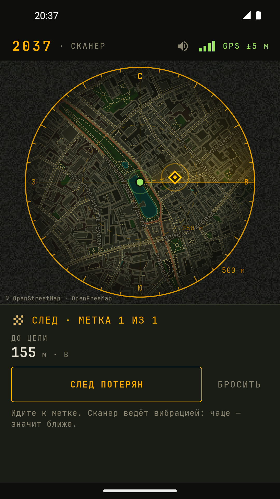
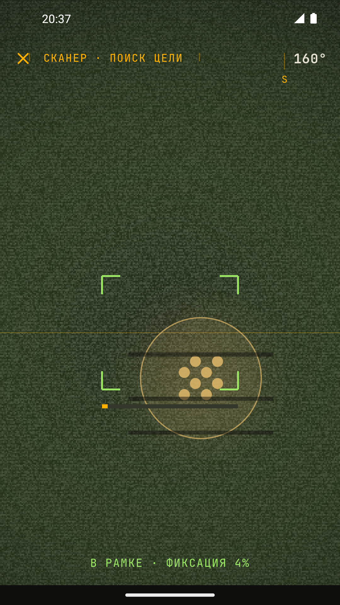
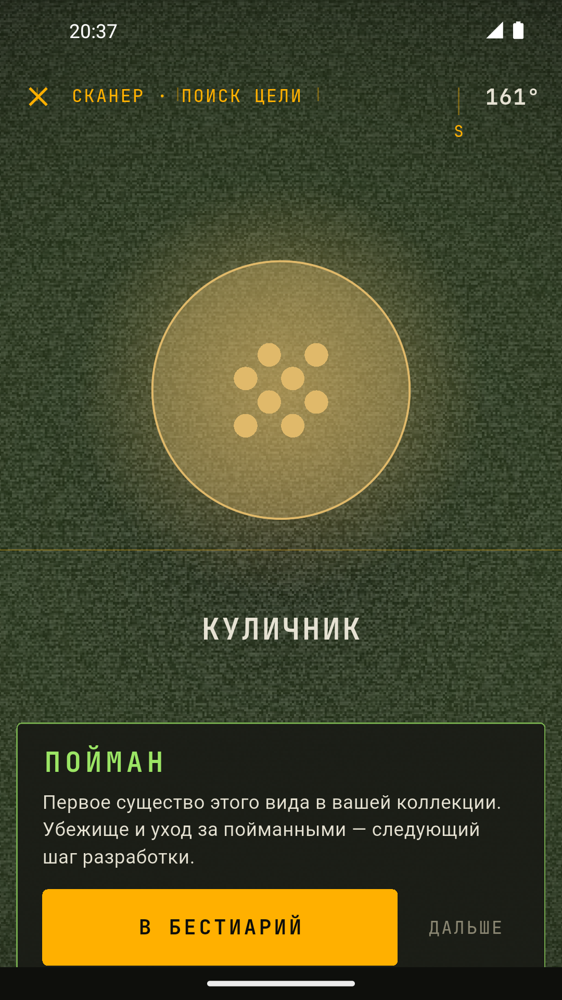

2037
сканер следопыта · игра для тех, кто ходит пешком
В 2037 году Земля столкнулась со своей альтернативной версией. Миры не уничтожили друг друга — они срослись. Это назвали Слиянием. Улица осталась прежней, а вот кто по ней теперь ходит — вопрос.
Телефон превращается в сканер следопыта — потёртый полевой прибор, который видит то, чего не видит глаз. Он показывает мир в радиусе 500 метров вокруг вас и ловит сигналы существ. Кто именно там — прибор не знает. Узнать можно одним способом: дойти.




Идёт закрытое тестирование
Игра делается по шагам, и каждый шаг проверяется на улице. Уже работает главное — охота по следу и поимка: метки, следы, шесть характеров существ, сканер по сторонам света, бестиарий, страницы которого проявляются. Картинка с камеры — следующая.
- Вступите в группу тестировщиков: groups.google.com/g/scanner2037-testers
- Станьте тестировщиком: play.google.com/apps/testing/app.g2037.scanner
- Установите игру из Google Play: play.google.com/store/apps/details?id=app.g2037.scanner
- Выйдите на улицу и возьмите след. Расскажите, интересно ли по нему идти и не ведут ли метки туда, куда идти нельзя.
Правила, которые не изменятся
- Только пешком. До 5 км/ч — полная игра. На бегу экран уходит в помехи, чтобы никто ни во что не врезался. В транспорте игра не работает.
- Все равны. Покупок за настоящие деньги не будет. Сила и доступ открываются пройденными километрами.
- Безопасность важнее игры. Смотрите по сторонам, а не в экран.
In English
In 2037 the Earth collided with an alternate version of itself. The two worlds did not destroy each other — they grew together. People called it the Merge. The street is the same as ever. Who walks it now is another question.
Your phone becomes a tracker's scanner: a worn field instrument that sees what the eye cannot. It shows the world within 500 metres of you and picks up signals of the creatures that came after the Merge. What exactly is out there, the scanner cannot tell. There is one way to find out: walk there.
The game is in closed testing. Its heart already works: tracking and capture — marks, traces, six creature temperaments, a compass-bound scanner frame, and a bestiary whose pages come into focus. The camera image comes next. To join, use the three links above.